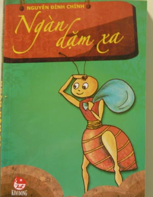

Truyện này được viết từ năm 1961 ở Hải Phòng. Viết đến đoạn chú Kiến Lửa cùng Kiến Nâu chạy thoát khỏi tổ bà Mối thì bỏ dở. 16 năm sau, năm 1977 ở bộ đội về, nhà văn Nguyễn Đình Thi đưa trả tôi bản thảo. Hình như là từ năm 1961, viết xong, tôi có đưa cho ông xem rồi quên phứt luôn. Năm 1978 tôi viết tiếp cho đến đoạn hai chú Kiến lạc trên đảo Đen rồi bỏ lại đó …cho đến năm nay 2007, 46 năm đã trôi qua, gần nửa thế kỉ, quyển tiểu thuyết phiêu lưu trẻ thơ này vẫn còn bỏ dở nửa chừng. Chẳng biết bao giờ mới viết xong đây?
Một người bạn của tôi có khuyên tôi nên viết nốt cho xong quyển tiểu
thuyết đầu tay rất hay này. Hay chẳng kém gì bộ tiểu thuyết hoang đường quái đản Đêm Thánh Nhân. Anh bạn tôi cứ nức nở khen như vậy.Tôi cũng đã thử ngồi vào bàn và cầm bút. Nhưng rồi …Tuổi ấu thơ đã trôi qua lâu lắm rồi …46 năm …nửa thế kỉ gió gió mây mây …còn đâu.
Hoạ sĩ Lê Liên có bảo tôi: “ Thỉnh thoảng có những bức tranh vẽ gần xong lại đẹp hơn cả. Nghệ thuật có những quy luật vớ vẩn như vậy.”
Tôi tặng nhà văn Nguyễn Đình Thi tác phẩm đầu tay này. Bởi vì nhờ ông mà bản thảo không bị mất và tôi cũng biết ông rất yêu cuốn tiểu thuyết trẻ con có một số phận dang dở hơi ly kì này. Tôi tin rằng khi nhận món quà này ở dưới suối vàng chắc ông sẽ mỉm cười.
N. Đ.C